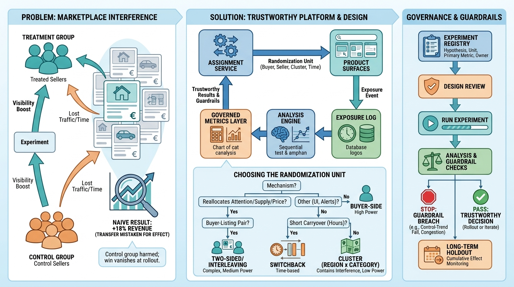

Part VII — PLATFORM: The Distributed System Underneath
Testing a Two-Sided Market: Experimentation Platforms

Image generated by Google Gemini (gemini-3-pro-image-preview)
Part VII — PLATFORM: The Distributed System Underneath

Image generated by Google Gemini (gemini-3-pro-image-preview)